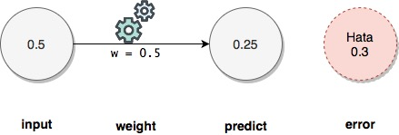
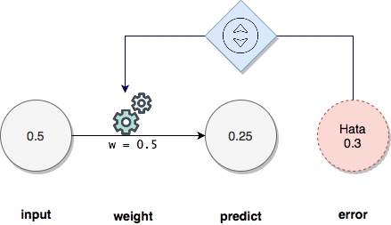
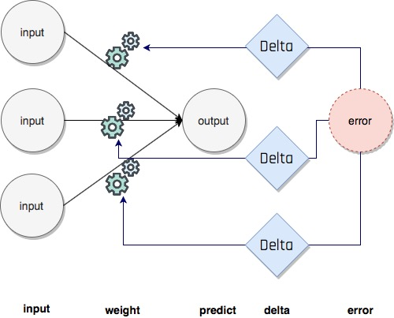
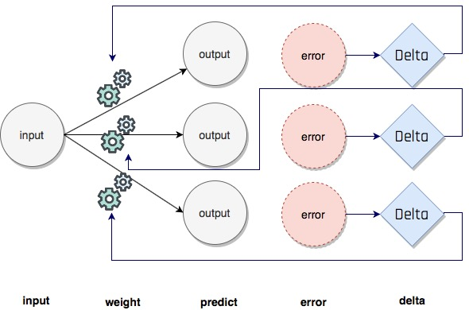
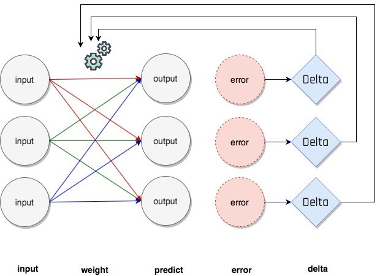

2. Öğrenme, Gradient Descent
Kayıt Tarihi:
Son Güncelleme:
Hazır parametreler verildiğinde nasıl tahmin üretildiğini bir önceki derste gördük, bu olay öğrenilmiş olan parametrelerin uygulanmasıdır. Bu derste bu parametrelerin nasıl öğrenildiğine bakacağız, deneme yanılma tekniğini biraz değiştirerek akıllıca bir strateji geliştireceğiz.
Anahtar Kelimeler: alpha · delta · error · gradient descent · hata ölçümü · öğrenme · prediction · trainingŞu ana kadar programlarımız sadece tahmin yaptı ve bu tahminleri yaparken kullandıkları weight parametrelerini biz verdik, dolayısıyla aslında makineyi tahmin yapacak şekilde açıkça programladık. Makine öğrenmesi bu değildir, makine nasıl tahmin yapabileceğini kendisi keşfetmelidir. Bunun yolu da makinenin yeterince doğru tahmin üretebilecek weight parametrelerini kenidisinin tespit etmesidir. Şimdi bunun nasıl yapılacağını açıklayacağım, makine öğrenmesindeki öğrenme süreci bu süreçtir.
Bir input ve bunun karşılığı olan cevap bilinsin, bu durumda verilen bir weight parametresi ile üretilen tahminin ne kadar hatalı olduğunu tespit edebiliriz. Yapmamız gereken şey sadece gerçek cevap ile makine tahmininin farkını almaktır, genelde hata payının pozitif olmasını isteriz ve bundan dolayı mutlak değerini veya karesini alarak negatif hata payını engelleriz. Çoğu durumda mutlak değer yerine kare almak daha mantıklıdır çünkü böylece büyük hataları daha da önceleriz; büyük sayıların karesi çok daha büyüktür, küçük (1'den) sayıların karesi daha küçüktür. 
weight = 0.5
input = 0.5
truth = 0.8
predict = input*weight
error = (predict - truth)**2 #to make error positive
print("Predict: ", predict)
print("Error (squared): ", error)
>>>
Predict: 0.25
Error (squared): 0.30250000000000005
Şimdi basit bir sinir ağında hem tahmini hem de yapılan hatayı yazdıralım. Aşağıda tek maçlık bir dataset var; yani hem input hem de bu inputun gerçek değeri verilmiş. Maçta 8.5 şut atılmış ve takımımız maçı kazanmış (bu durum 1 olarak kodlanmış).
weight = 0.1
step = 0.01
def neural_network(input, weight):
prediction = input*weight
return prediction
shots = [8.5]
match_result = [1] #won!!
input = shots[0]
truth = match_result[0]
predict = neural_network(input, weight)
error = (predict - truth)**2
print("Predict: ", predict)
print("Error (squared): ", error)
>>>
Predict: 0.8500000000000001
Error (squared): 0.022499999999999975
Sonuç olarak sinir ağımızın tahminimize göre takımın galip gelme ihtimali %85 olarak hesaplandı. Gerçek cevabın %100 (kazanma durumu, 1) olduğunu biliyoruz, dolayısıyla 0.15 hata (%15) yapıldı, karesi alındığında 0.0225 elde ederiz.
Şimdi weight parametresini değiştirerek bu hatayı azalmaya çalışalım, peki weight değerini azaltmalı mıyız yoksa arttırmalı mıyız? Şu aşamada bunu deneme yanılma yaparak belirlemekten başka yolumuz yok.
lr = 0.01
pred_up = neural_network(input, weight+lr)
error_up = (pred_up - truth)**2
print("Error (upwards): ", error_up)
pred_down = neural_network(input, weight-lr)
error_down = (pred_down - truth)**2
print("Error (downwards): ", error_down)
>>>
Error (upwards): 0.004224999999999993
Error (downwards): 0.05522499999999994
 Gördüğümüz gibi weight parametresini arttırdığımızda hata azalıyor, dolayısıyla bir miktar arttırarak tahmin yapmak gerekiyor. Peki daha sonra nasıl tahminimizi geliştireceğiz, yine weight parametresini arttırmalı mıyız? Bunu bilemeyiz, her seferinde kontrol edip hatanın azaldığı yönde devam etmeliyiz. Böyle adım adım hatayı azaltarak weight parametresini en uygun değere doğru güncellemelisiniz. Aşağıdaki program bunu yapıyor, bir sinir ağında 111 adımlı bir döngü içinde en iyi tahmine ulaşıncaya kadar weight parametresini güncelliyor ve sonuçta en iyi parametreyi belirliyor. Neden 111 peki? Bu sayı deneyerek bulmalısınız, probleminize göre değişecektir. Bu problemde hata payı 111 adımdan sonra gelişmeyi durduruyor, sıfıra yakın bir civarda salınıyor. Bunu gözlemlemek için döngü sayısını 121 yaparak çalıştırın.
weight = 0.5
input = 0.5
truth = 0.8
step = 0.01
for iteration in range(111):
prediction = input*weight
error = (prediction - truth)**2
print("Weight: " + str(weight) + " Error: " + str(error) + " Prediction: " + str(prediction))
up_prediction = input*(weight + step) #try up
up_error = (up_prediction - truth)**2
down_prediction = input*(weight - step) #try down
down_error = (down_prediction - truth)**2
if down_error < up_error: #go down
weight -= step
if up_error < down_error: #go up
weight += step
>>>
Weight: 0.5 Error: 0.30250000000000005 Prediction: 0.25
Weight: 0.51 Error: 0.29702500000000004 Prediction: 0.255
Weight: 0.52 Error: 0.2916 Prediction: 0.26
Weight: 0.53 Error: 0.286225 Prediction: 0.265
Weight: 0.54 Error: 0.28090000000000004 Prediction: 0.27
Weight: 0.55 Error: 0.275625 Prediction: 0.275
Weight: 0.56 Error: 0.27040000000000003 Prediction: 0.28
Weight: 0.5700000000000001 Error: 0.265225 Prediction: 0.28500000000000003
Weight: 0.5800000000000001 Error: 0.2601 Prediction: 0.29000000000000004
Weight: 0.5900000000000001 Error: 0.255025 Prediction: 0.29500000000000004
Weight: 0.6000000000000001 Error: 0.25 Prediction: 0.30000000000000004
Weight: 0.6100000000000001 Error: 0.245025 Prediction: 0.30500000000000005
Weight: 0.6200000000000001 Error: 0.24009999999999998 Prediction: 0.31000000000000005
Weight: 0.6300000000000001 Error: 0.235225 Prediction: 0.31500000000000006
Weight: 0.6400000000000001 Error: 0.2304 Prediction: 0.32000000000000006
Weight: 0.6500000000000001 Error: 0.225625 Prediction: 0.32500000000000007
Weight: 0.6600000000000001 Error: 0.22089999999999999 Prediction: 0.33000000000000007
Weight: 0.6700000000000002 Error: 0.21622499999999997 Prediction: 0.3350000000000001
Weight: 0.6800000000000002 Error: 0.21159999999999995 Prediction: 0.3400000000000001
Weight: 0.6900000000000002 Error: 0.20702499999999996 Prediction: 0.3450000000000001
Weight: 0.7000000000000002 Error: 0.20249999999999996 Prediction: 0.3500000000000001
Weight: 0.7100000000000002 Error: 0.19802499999999995 Prediction: 0.3550000000000001
Weight: 0.7200000000000002 Error: 0.19359999999999997 Prediction: 0.3600000000000001
Weight: 0.7300000000000002 Error: 0.18922499999999995 Prediction: 0.3650000000000001
Weight: 0.7400000000000002 Error: 0.18489999999999995 Prediction: 0.3700000000000001
Weight: 0.7500000000000002 Error: 0.18062499999999995 Prediction: 0.3750000000000001
Weight: 0.7600000000000002 Error: 0.17639999999999995 Prediction: 0.3800000000000001
Weight: 0.7700000000000002 Error: 0.17222499999999993 Prediction: 0.3850000000000001
Weight: 0.7800000000000002 Error: 0.16809999999999994 Prediction: 0.3900000000000001
Weight: 0.7900000000000003 Error: 0.16402499999999992 Prediction: 0.39500000000000013
Weight: 0.8000000000000003 Error: 0.15999999999999992 Prediction: 0.40000000000000013
Weight: 0.8100000000000003 Error: 0.1560249999999999 Prediction: 0.40500000000000014
Weight: 0.8200000000000003 Error: 0.15209999999999993 Prediction: 0.41000000000000014
Weight: 0.8300000000000003 Error: 0.1482249999999999 Prediction: 0.41500000000000015
Weight: 0.8400000000000003 Error: 0.14439999999999992 Prediction: 0.42000000000000015
Weight: 0.8500000000000003 Error: 0.14062499999999992 Prediction: 0.42500000000000016
Weight: 0.8600000000000003 Error: 0.1368999999999999 Prediction: 0.43000000000000016
Weight: 0.8700000000000003 Error: 0.1332249999999999 Prediction: 0.43500000000000016
Weight: 0.8800000000000003 Error: 0.1295999999999999 Prediction: 0.44000000000000017
Weight: 0.8900000000000003 Error: 0.12602499999999991 Prediction: 0.4450000000000002
Weight: 0.9000000000000004 Error: 0.1224999999999999 Prediction: 0.4500000000000002
Weight: 0.9100000000000004 Error: 0.11902499999999991 Prediction: 0.4550000000000002
Weight: 0.9200000000000004 Error: 0.1155999999999999 Prediction: 0.4600000000000002
Weight: 0.9300000000000004 Error: 0.11222499999999991 Prediction: 0.4650000000000002
Weight: 0.9400000000000004 Error: 0.1088999999999999 Prediction: 0.4700000000000002
Weight: 0.9500000000000004 Error: 0.1056249999999999 Prediction: 0.4750000000000002
Weight: 0.9600000000000004 Error: 0.1023999999999999 Prediction: 0.4800000000000002
Weight: 0.9700000000000004 Error: 0.0992249999999999 Prediction: 0.4850000000000002
Weight: 0.9800000000000004 Error: 0.0960999999999999 Prediction: 0.4900000000000002
Weight: 0.9900000000000004 Error: 0.0930249999999999 Prediction: 0.4950000000000002
Weight: 1.0000000000000004 Error: 0.0899999999999999 Prediction: 0.5000000000000002
Weight: 1.0100000000000005 Error: 0.0870249999999999 Prediction: 0.5050000000000002
Weight: 1.0200000000000005 Error: 0.0840999999999999 Prediction: 0.5100000000000002
Weight: 1.0300000000000005 Error: 0.0812249999999999 Prediction: 0.5150000000000002
Weight: 1.0400000000000005 Error: 0.07839999999999989 Prediction: 0.5200000000000002
Weight: 1.0500000000000005 Error: 0.07562499999999989 Prediction: 0.5250000000000002
Weight: 1.0600000000000005 Error: 0.0728999999999999 Prediction: 0.5300000000000002
Weight: 1.0700000000000005 Error: 0.07022499999999988 Prediction: 0.5350000000000003
Weight: 1.0800000000000005 Error: 0.06759999999999988 Prediction: 0.5400000000000003
Weight: 1.0900000000000005 Error: 0.06502499999999989 Prediction: 0.5450000000000003
Weight: 1.1000000000000005 Error: 0.06249999999999989 Prediction: 0.5500000000000003
Weight: 1.1100000000000005 Error: 0.06002499999999989 Prediction: 0.5550000000000003
Weight: 1.1200000000000006 Error: 0.05759999999999989 Prediction: 0.5600000000000003
Weight: 1.1300000000000006 Error: 0.05522499999999989 Prediction: 0.5650000000000003
Weight: 1.1400000000000006 Error: 0.05289999999999989 Prediction: 0.5700000000000003
Weight: 1.1500000000000006 Error: 0.05062499999999989 Prediction: 0.5750000000000003
Weight: 1.1600000000000006 Error: 0.04839999999999989 Prediction: 0.5800000000000003
Weight: 1.1700000000000006 Error: 0.04622499999999989 Prediction: 0.5850000000000003
Weight: 1.1800000000000006 Error: 0.04409999999999989 Prediction: 0.5900000000000003
Weight: 1.1900000000000006 Error: 0.042024999999999896 Prediction: 0.5950000000000003
Weight: 1.2000000000000006 Error: 0.0399999999999999 Prediction: 0.6000000000000003
Weight: 1.2100000000000006 Error: 0.03802499999999989 Prediction: 0.6050000000000003
Weight: 1.2200000000000006 Error: 0.036099999999999896 Prediction: 0.6100000000000003
Weight: 1.2300000000000006 Error: 0.034224999999999894 Prediction: 0.6150000000000003
Weight: 1.2400000000000007 Error: 0.0323999999999999 Prediction: 0.6200000000000003
Weight: 1.2500000000000007 Error: 0.0306249999999999 Prediction: 0.6250000000000003
Weight: 1.2600000000000007 Error: 0.0288999999999999 Prediction: 0.6300000000000003
Weight: 1.2700000000000007 Error: 0.027224999999999902 Prediction: 0.6350000000000003
Weight: 1.2800000000000007 Error: 0.025599999999999904 Prediction: 0.6400000000000003
Weight: 1.2900000000000007 Error: 0.024024999999999904 Prediction: 0.6450000000000004
Weight: 1.3000000000000007 Error: 0.022499999999999905 Prediction: 0.6500000000000004
Weight: 1.3100000000000007 Error: 0.02102499999999991 Prediction: 0.6550000000000004
Weight: 1.3200000000000007 Error: 0.01959999999999991 Prediction: 0.6600000000000004
Weight: 1.3300000000000007 Error: 0.01822499999999991 Prediction: 0.6650000000000004
Weight: 1.3400000000000007 Error: 0.016899999999999915 Prediction: 0.6700000000000004
Weight: 1.3500000000000008 Error: 0.015624999999999917 Prediction: 0.6750000000000004
Weight: 1.3600000000000008 Error: 0.01439999999999992 Prediction: 0.6800000000000004
Weight: 1.3700000000000008 Error: 0.01322499999999992 Prediction: 0.6850000000000004
Weight: 1.3800000000000008 Error: 0.012099999999999923 Prediction: 0.6900000000000004
Weight: 1.3900000000000008 Error: 0.011024999999999925 Prediction: 0.6950000000000004
Weight: 1.4000000000000008 Error: 0.009999999999999929 Prediction: 0.7000000000000004
Weight: 1.4100000000000008 Error: 0.009024999999999932 Prediction: 0.7050000000000004
Weight: 1.4200000000000008 Error: 0.008099999999999934 Prediction: 0.7100000000000004
Weight: 1.4300000000000008 Error: 0.007224999999999937 Prediction: 0.7150000000000004
Weight: 1.4400000000000008 Error: 0.0063999999999999405 Prediction: 0.7200000000000004
Weight: 1.4500000000000008 Error: 0.005624999999999943 Prediction: 0.7250000000000004
Weight: 1.4600000000000009 Error: 0.004899999999999947 Prediction: 0.7300000000000004
Weight: 1.4700000000000009 Error: 0.00422499999999995 Prediction: 0.7350000000000004
Weight: 1.4800000000000009 Error: 0.003599999999999953 Prediction: 0.7400000000000004
Weight: 1.4900000000000009 Error: 0.0030249999999999565 Prediction: 0.7450000000000004
Weight: 1.5000000000000009 Error: 0.00249999999999996 Prediction: 0.7500000000000004
Weight: 1.510000000000001 Error: 0.0020249999999999635 Prediction: 0.7550000000000004
Weight: 1.520000000000001 Error: 0.0015999999999999673 Prediction: 0.7600000000000005
Weight: 1.530000000000001 Error: 0.0012249999999999711 Prediction: 0.7650000000000005
Weight: 1.540000000000001 Error: 0.0008999999999999749 Prediction: 0.7700000000000005
Weight: 1.550000000000001 Error: 0.0006249999999999789 Prediction: 0.7750000000000005
Weight: 1.560000000000001 Error: 0.00039999999999998294 Prediction: 0.7800000000000005
Weight: 1.570000000000001 Error: 0.00022499999999998706 Prediction: 0.7850000000000005
Weight: 1.580000000000001 Error: 9.999999999999129e-05 Prediction: 0.7900000000000005
Weight: 1.590000000000001 Error: 2.4999999999995603e-05 Prediction: 0.7950000000000005
Weight: 1.600000000000001 Error: 1.9721522630525295e-31 Prediction: 0.8000000000000005
Bu yaptığımız şey makine öğrenmesidir; bir soru, bir cevap, rastgele bir weight verdik ve makine deneyerek en uygun weight değerini buldu. Bunu kullanarak en uygun tahminleri yapabilecek artık. Bu süreç öğrenme sürecidir; yani en uygun weight parametrelerini tespit etmek. Fakat yukarıda uyguladığımız yöntemin bazı kötü tarafları var:
- Öncelikle bu yöntem çok verimsiz; gerçek problemlerde milyonlarca weight parametresi ve binlerce soru ile cevaplar kullanılır. Böyle döngülerin tamamlanması çok uzun zaman alabilir.
- Bu yöntem bir noktadan sonra yakınsamayı durdurabilir; mesela step değerini 0.01 den 0.5'e çekin, bir noktadan sonra hata payı salınıp duracaktır. Daha açık olması için step değerini 10 yapın, hata hiç azalmayacaktır. Weight değerini hangi yönde değiştirmeyi bilseniz bile uygun bir step değeri seçmezseniz hatayı azaltamazsınız.
weight = 0.5
input = 0.5
truth = 0.8
for iteration in range(50):
predict = input*weight
error = (predict - truth)**2
delta_w = (predict - truth)*input #gradient descent
weight -= delta_w
print("Weight: " + str(weight) + ", Error: " + str(error) + ", Prediction: " + str(predict))
>>>
Weight: 0.775, Error: 0.30250000000000005, Prediction: 0.25
Weight: 0.9812500000000001, Error: 0.17015625000000004, Prediction: 0.3875
Weight: 1.1359375, Error: 0.095712890625, Prediction: 0.49062500000000003
Weight: 1.251953125, Error: 0.05383850097656251, Prediction: 0.56796875
Weight: 1.33896484375, Error: 0.03028415679931642, Prediction: 0.6259765625
Weight: 1.4042236328125, Error: 0.0170348381996155, Prediction: 0.669482421875
Weight: 1.453167724609375, Error: 0.00958209648728372, Prediction: 0.70211181640625
Weight: 1.4898757934570312, Error: 0.005389929274097089, Prediction: 0.7265838623046875
Weight: 1.5174068450927733, Error: 0.0030318352166796153, Prediction: 0.7449378967285156
Weight: 1.53805513381958, Error: 0.0017054073093822882, Prediction: 0.7587034225463867
Weight: 1.553541350364685, Error: 0.0009592916115275371, Prediction: 0.76902756690979
Weight: 1.5651560127735138, Error: 0.0005396015314842384, Prediction: 0.7767706751823426
Weight: 1.5738670095801353, Error: 0.000303525861459885, Prediction: 0.7825780063867569
Weight: 1.5804002571851015, Error: 0.00017073329707118678, Prediction: 0.7869335047900676
Weight: 1.5853001928888262, Error: 9.603747960254256e-05, Prediction: 0.7902001285925507
Weight: 1.5889751446666196, Error: 5.402108227642978e-05, Prediction: 0.7926500964444131
Weight: 1.5917313584999646, Error: 3.038685878049206e-05, Prediction: 0.7944875723333098
Weight: 1.5937985188749735, Error: 1.7092608064027242e-05, Prediction: 0.7958656792499823
Weight: 1.5953488891562302, Error: 9.614592036015323e-06, Prediction: 0.7968992594374867
Weight: 1.5965116668671726, Error: 5.408208020258491e-06, Prediction: 0.7976744445781151
Weight: 1.5973837501503794, Error: 3.0421170113954975e-06, Prediction: 0.7982558334335863
Weight: 1.5980378126127845, Error: 1.7111908189101127e-06, Prediction: 0.7986918750751897
Weight: 1.5985283594595885, Error: 9.625448356369383e-07, Prediction: 0.7990189063063923
Weight: 1.5988962695946913, Error: 5.41431470045737e-07, Prediction: 0.7992641797297942
Weight: 1.5991722021960184, Error: 3.045552019007577e-07, Prediction: 0.7994481347973457
Weight: 1.599379151647014, Error: 1.7131230106922215e-07, Prediction: 0.7995861010980092
Weight: 1.5995343637352604, Error: 9.636316935140299e-08, Prediction: 0.799689575823507
Weight: 1.5996507728014453, Error: 5.420428276019003e-08, Prediction: 0.7997671818676302
Weight: 1.599738079601084, Error: 3.048990905260689e-08, Prediction: 0.7998253864007226
Weight: 1.5998035597008131, Error: 1.715057384208411e-08, Prediction: 0.799869039800542
Weight: 1.59985266977561, Error: 9.647197786166859e-09, Prediction: 0.7999017798504066
Weight: 1.5998895023317075, Error: 5.426548754714769e-09, Prediction: 0.799926334887805
Weight: 1.5999171267487806, Error: 3.0524336745270573e-09, Prediction: 0.7999447511658537
Weight: 1.5999378450615855, Error: 1.7169939419214697e-09, Prediction: 0.7999585633743903
Weight: 1.5999533837961892, Error: 9.658090923291016e-10, Prediction: 0.7999689225307928
Weight: 1.599965037847142, Error: 5.432676144338258e-10, Prediction: 0.7999766918980946
Weight: 1.5999737783853565, Error: 3.05588033119027e-10, Prediction: 0.799982518923571
Weight: 1.5999803337890173, Error: 1.718932686294527e-10, Prediction: 0.7999868891926782
Weight: 1.599985250341763, Error: 9.668996360515884e-11, Prediction: 0.7999901668945086
Weight: 1.5999889377563223, Error: 5.4388104527083076e-11, Prediction: 0.7999926251708815
Weight: 1.5999917033172417, Error: 3.059330879648423e-11, Prediction: 0.7999944688781612
Weight: 1.5999937774879314, Error: 1.7208736198252657e-11, Prediction: 0.7999958516586209
Weight: 1.5999953331159484, Error: 9.67991411134441e-12, Prediction: 0.7999968887439657
Weight: 1.5999964998369614, Error: 5.4449516878902955e-12, Prediction: 0.7999976665579742
Weight: 1.599997374877721, Error: 3.062785324438291e-12, Prediction: 0.7999982499184807
Weight: 1.5999980311582909, Error: 1.7228167450694004e-12, Prediction: 0.7999986874388605
Weight: 1.5999985233687182, Error: 9.69084418992245e-13, Prediction: 0.7999990155791454
Weight: 1.5999988925265387, Error: 5.451099856831379e-13, Prediction: 0.7999992616843591
Weight: 1.599999169394904, Error: 3.066243669160265e-13, Prediction: 0.7999994462632694
Weight: 1.599999377046178, Error: 1.724762063902649e-13, Prediction: 0.799999584697452
Bakın burada hiç deneme yanılma yapmadık, weight değerini ne yönde değiştireceğimizi ve ne kadar değiştireceğimizi araştırmadık. Döngü sayısını arttırarak gözlemleyebilirsiniz ki ne kadar ilerlerseniz ilerleyin hiç bir zaman salınıma düşmezsiniz, sürekli hata azalmaya devam eder. delta_w değişkeninin işareti ve büyüklüğü bütün ihtiyacımız olan bilgiyi içeriyor, peki bu nasıl oluyor?
Aslında burada ne sihir var ne de büyü!! Hata payının açık ifadesini biraz kurcalayın:
$$
\begin{eqnarray}
\textrm{error} &=& (\textrm{prediction} - \textrm{truth})^2\notag\\
&=& (\textrm{input}\cdot\textrm{weight} - \textrm{truth})^2\notag\\
&=& \textrm{input}^2\cdot\textrm{weight}^2 - 2\cdot\textrm{input}\cdot\textrm{weight}\cdot\textrm{truth} + \textrm{truth}^2\notag
\end{eqnarray}
$$
dolayısıyla error parametresinin weight parametresine göre türevi
$$
\begin{eqnarray}
\dfrac{\textrm{d}\; \textrm{error}}{\textrm{d}\;\textrm{weight}} &=& 2\cdot\textrm{input}^2\cdot\textrm{weight} - 2\cdot\textrm{input}\cdot\textrm{truth}\notag\\
&=& 2\cdot\textrm{input}\cdot\left( \textrm{input}\cdot\textrm{weight} - \textrm{truth}\right)\notag\\
&=& 2\cdot\textrm{input}\cdot\left( \textrm{prediction} - \textrm{truth} \right)\notag
\end{eqnarray}
$$
olur. Türevin anlamı değişimdir, buradan hatanın weight parametresine göre değişiminin $2\cdot\textrm{input}\cdot\left( \textrm{prediction} - \textrm{truth} \right)$ kadar olduğunu anlarız. Bu dam yukarıdaki programımızdaki delta_w sayısıdır (2 çarpanını görmeyin, onu eklersek de aynı olay gerçekleşir), hatayı sıfırlamak istiyorsak weight parametresinin tersi yönünde hareket ettirmemiz gerekir; yani türev kadar azaltmak. Bu olaya gradient descent denir.
Gradient descent tekniğinde dikkat edilmesi gereken bir nokta var, şimdi buna değineceğim. Öncelikle
$$\textrm{weight} = \textrm{weight} - (\textrm{input}\cdot(\textrm{prediction} - \textrm{truth}))$$
olduğunu hatırlayın. Burada input değeri weight değerine göre çok büyük bir değer ise gradient descent adımlarında weight değerlerindeki güncellemeler çok büyük boyutlu olur ve bu durum hatanın küçülmesini engelleyebilir. Örneğin aşağıda input değerini 2 yaparak bir deneme yapalım.
weight = 0.5
input = 2
truth = 0.8
for iteration in range(10):
predict = input*weight
error = (predict - truth)**2
delta_w = (predict - truth)*input #gradient descent
weight -= delta_w
print("Weight: " + str(weight) + ", Error: " + str(error) + ", Prediction: " + str(predict))
>>>
Weight: 0.10000000000000009, Error: 0.03999999999999998, Prediction: 1.0
Weight: 1.2999999999999998, Error: 0.3599999999999998, Prediction: 0.20000000000000018
Weight: -2.2999999999999994, Error: 3.2399999999999984, Prediction: 2.5999999999999996
Weight: 8.499999999999998, Error: 29.159999999999986, Prediction: -4.599999999999999
Weight: -23.89999999999999, Error: 262.4399999999999, Prediction: 16.999999999999996
Weight: 73.29999999999997, Error: 2361.959999999998, Prediction: -47.79999999999998
Weight: -218.2999999999999, Error: 21257.639999999978, Prediction: 146.59999999999994
Weight: 656.4999999999998, Error: 191318.75999999983, Prediction: -436.5999999999998
Weight: -1967.8999999999994, Error: 1721868.839999999, Prediction: 1312.9999999999995
Weight: 5905.299999999998, Error: 15496819.559999991, Prediction: -3935.799999999999
Gördüğünüz gibi tahminimiz ıraksıyor, yani hata gittikçe büyüyor. Bunu engellemek için weight üzerinde yapılacak güncellemenin büyüklüğünü küçültmemiz gerekiyor, bunu yapmanın en kolay yolu gradient descent adımında bu büyüklüğü küçük bir sayı ile çarpıp küçülttükten sonra weight değerinden çıkarmak. Aşağıda bunu yapıyoruz.
weight = 0.5
goal_pred = 0.8
input = 2
alpha = 0.1
for iteration in range(20):
pred = input * weight
error = (pred - goal_pred)**2
derivative = input*(pred - goal_pred)
weight = weight - (alpha*derivative)
print("Error:" + str(error) + " Prediction:" + str(pred))
>>>
Error:0.03999999999999998 Prediction:1.0
Error:0.0144 Prediction:0.92
Error:0.005183999999999993 Prediction:0.872
Error:0.0018662400000000014 Prediction:0.8432000000000001
Error:0.0006718464000000028 Prediction:0.8259200000000001
Error:0.00024186470400000033 Prediction:0.815552
Error:8.70712934399997e-05 Prediction:0.8093312
Error:3.134566563839939e-05 Prediction:0.80559872
Error:1.1284439629823931e-05 Prediction:0.803359232
Error:4.062398266736526e-06 Prediction:0.8020155392
Error:1.4624633760252567e-06 Prediction:0.8012093235200001
Error:5.264868153690924e-07 Prediction:0.8007255941120001
Error:1.8953525353291194e-07 Prediction:0.8004353564672001
Error:6.82326912718715e-08 Prediction:0.8002612138803201
Error:2.456376885786678e-08 Prediction:0.8001567283281921
Error:8.842956788836216e-09 Prediction:0.8000940369969153
Error:3.1834644439835434e-09 Prediction:0.8000564221981492
Error:1.1460471998340758e-09 Prediction:0.8000338533188895
Error:4.125769919393652e-10 Prediction:0.8000203119913337
Error:1.485277170987127e-10 Prediction:0.8000121871948003
Gördüğününz gibi alpha = 0.1 ile küçülterek gradient descent yaptığımızda sorun ortadan kalkıyor, peki 0.1 sayısını nasıl seçtik? Deneyerek, böyle seçtik ve işe yaradığını gördük. Makine öğrenmesi üzerine çalışanlar zamanlarının önemli bir kısmını sinir ağlarındaki alpha gibi parametrelerin nasıl seçilmesi gerektiğini anlamak için deneme yanılma yaparak geçirir!
Birden çok weight parametresi bulunan çok inputlu sinir ağlarında gradient descent yöntemi benzer şekilde uygulanır; input verisinin her bir elemanına karşılık birer delta değeri hesaplanarak bir delta vektörü oluşturulur ve karşılık gelen weight değerleri bu delta değerleri kullanılarak güncellenir.  Aşağıdaki programda bu durum gözlenebilir.
def w_sum(a,b):
assert(len(a) == len(b))
output = 0
for i in range(len(a)):
output += (a[i]*b[i])
return output
def ele_mul(number,vector):
output = [0,0,0]
assert(len(output) == len(vector))
for i in range(len(vector)):
output[i] = number*vector[i]
return output
weights = [0.01, 0.02, -.02]
def neural_network(input,weights):
pred = w_sum(input,weights)
return pred
input1 = [8.5, 9.5, 9.9, 9.0]
input2 = [0.65, 0.8, 0.8, 0.9]
input3 = [1.2, 1.3, 0.5, 1.0]
win_lose_binary = [1, 1, 0, 1]
truth = win_lose_binary[0]
input = [input1[0], input2[0], input3[0]]
pred = neural_network(input, weights)
error = (pred - truth)**2
delta = pred - truth
weight_deltas = ele_mul(delta, input)
alpha = 0.01
for i in range(len(weights)):
weights[i] -= alpha * weight_deltas[i]
print("Weights:" + str(weights))
print("Weight Deltas:" + str(weight_deltas))
>>>
Weights:[0.08871, 0.026019, -0.008888]
Weight Deltas:[-7.8709999999999996, -0.6019, -1.1112]
Aşağıdaki programda bir kaç adım uygulanıyor, her adımın çıktısını gözlemleyebilirsiniz.
def neural_network(input, weights):
out = 0
for i in range(len(input)):
out += (input[i]*weights[i])
return out
def ele_mul(scalar, vector):
out = [0,0,0]
for i in range(len(out)):
out[i] = vector[i]*scalar
return out
input1 = [8.5, 9.5, 9.9, 9.0]
input2 = [0.65, 0.8, 0.8, 0.9]
input3 = [1.2, 1.3, 0.5, 1.0]
win_lose_binary = [1, 1, 0, 1]
truth = win_lose_binary[0]
alpha = 0.01
weights = [0.01, 0.02, -.02]
input = [input1[0], input2[0], input3[0]]
for iter in range(10):
pred = neural_network(input,weights)
error = (pred - truth)**2
delta = pred - truth
weight_deltas=ele_mul(delta, input)
print("Iteration:" + str(iter+1))
print("Pred:" + str(pred))
print("Error:" + str(error))
print("Delta:" + str(delta))
print("Weights:" + str(weights))
print("Weight_Deltas:")
print(str(weight_deltas))
print()
for i in range(len(weights)):
weights[i]-=alpha*weight_deltas[i]
>>>
Iteration:1
Pred:0.07400000000000001
Error:0.8574759999999999
Delta:-0.9259999999999999
Weights:[0.01, 0.02, -0.02]
Weight_Deltas:
[-7.8709999999999996, -0.6019, -1.1112]
Iteration:2
Pred:0.76028175
Error:0.05746483938306251
Delta:-0.23971825000000002
Weights:[0.08871, 0.026019, -0.008888]
Weight_Deltas:
[-2.0376051250000002, -0.15581686250000001, -0.2876619]
Iteration:3
Pred:0.93794293803125
Error:0.003851078940193284
Delta:-0.06205706196875005
Weights:[0.10908605125, 0.027577168625000002, -0.006011381]
Weight_Deltas:
[-0.5274850267343754, -0.040337090279687536, -0.07446847436250005]
Iteration:4
Pred:0.9839349780828398
Error:0.0002580849291988374
Delta:-0.016065021917160194
Weights:[0.11436090151734375, 0.027980539527796878, -0.005266696256374999]
Weight_Deltas:
[-0.13655268629586165, -0.010442264246154126, -0.019278026300592232]
Iteration:5
Pred:0.9958411674511952
Error:1.7295888168998068e-05
Delta:-0.004158832548804781
Weights:[0.11572642838030237, 0.02808496217025842, -0.005073915993369076]
Weight_Deltas:
[-0.035350076664840635, -0.0027032411567231075, -0.0049905990585657365]
Iteration:6
Pred:0.998923382223928
Error:1.1591058357543095e-06
Delta:-0.001076617776072042
Weights:[0.11607992914695077, 0.02811199458182565, -0.005024010002783419]
Weight_Deltas:
[-0.009151251096612356, -0.0006998015544468272, -0.0012919413312864503]
Iteration:7
Pred:0.9997212905732195
Error:7.767894457633911e-08
Delta:-0.00027870942678054345
Weights:[0.11617144165791689, 0.02811899259737012, -0.005011090589470555]
Weight_Deltas:
[-0.0023690301276346193, -0.00018116112740735325, -0.0003344513121366521]
Iteration:8
Pred:0.9999278490971423
Error:5.205752783185025e-09
Delta:-7.215090285772607e-05
Weights:[0.11619513195919323, 0.028120804208644195, -0.005007746076349189]
Weight_Deltas:
[-0.0006132826742906716, -4.689808685752195e-05, -8.658108342927128e-05]
Iteration:9
Pred:0.9999813219350224
Error:3.4887011130644175e-10
Delta:-1.8678064977573072e-05
Weights:[0.11620126478593613, 0.02812127318951277, -0.005006880265514896]
Weight_Deltas:
[-0.00015876355230937111, -1.2140742235422498e-05, -2.2413677973087685e-05]
Iteration:10
Pred:0.999995164715929
Error:2.3379972047510922e-11
Delta:-4.835284071025292e-06
Weights:[0.11620285242145922, 0.028121394596935124, -0.005006656128735165]
Weight_Deltas:
[-4.109991460371498e-05, -3.14293464616644e-06, -5.80234088523035e-06]
Şimdi ilginç bir deneme yapacağız, aşağıdaki programın yukarıda çalıştırdığımızdan tek bir farkı var. Weight parametrelerinden bir tanesi donduruluyor (freeze), yani güncellenmesi engelleniyor. Öğrenme aşaması diğer iki weight parametresi üzerinden gerçekleştirilmeye çalışılacak.
def neural_network(input, weights):
out = 0
for i in range(len(input)):
out += (input[i]*weights[i])
return out
def ele_mul(scalar, vector):
out = [0,0,0]
for i in range(len(out)):
out[i] = vector[i]*scalar
return out
input1 = [8.5, 9.5, 9.9, 9.0]
input2 = [0.65, 0.8, 0.8, 0.9]
input3 = [1.2, 1.3, 0.5, 1.0]
win_lose_binary = [1, 1, 0, 1]
truth = win_lose_binary[0]
alpha = 0.01
weights = [0.1, 0.2, -.1]
input = [input1[0], input2[0], input3[0]]
for iter in range(10):
pred = neural_network(input,weights)
error = (pred - truth)**2
delta = pred - truth
weight_deltas=ele_mul(delta, input)
weight_deltas[0] = 0
print("Iteration:" + str(iter+1))
print("Pred:" + str(pred))
print("Error:" + str(error))
print("Delta:" + str(delta))
print("Weights:" + str(weights))
print("Weight_Deltas:")
print(str(weight_deltas))
print()
for i in range(len(weights)):
weights[i]-=alpha*weight_deltas[i]
>>>
Iteration:1
Pred:0.8600000000000001
Error:0.01959999999999997
Delta:-0.1399999999999999
Weights:[0.1, 0.2, -0.1]
Weight_Deltas:
[0, -0.09099999999999994, -0.16799999999999987]
Iteration:2
Pred:0.8626075000000001
Error:0.018876699056249977
Delta:-0.13739249999999992
Weights:[0.1, 0.20091, -0.09832]
Weight_Deltas:
[0, -0.08930512499999994, -0.1648709999999999]
Iteration:3
Pred:0.8651664353125001
Error:0.018180090166338207
Delta:-0.13483356468749985
Weights:[0.1, 0.20180305125, -0.09667129]
Weight_Deltas:
[0, -0.0876418170468749, -0.16180027762499982]
Iteration:4
Pred:0.8676777104548048
Error:0.017509188310482475
Delta:-0.1323222895451952
Weights:[0.1, 0.20267946942046874, -0.09505328722375]
Weight_Deltas:
[0, -0.08600948820437689, -0.15878674745423424]
Iteration:5
Pred:0.870142213097584
Error:0.016863044819193287
Delta:-0.129857786902416
Weights:[0.1, 0.20353956430251252, -0.09346541974920766]
Weight_Deltas:
[0, -0.0844075614865704, -0.1558293442828992]
Iteration:6
Pred:0.8725608143786415
Error:0.01624074603183506
Delta:-0.12743918562135848
Weights:[0.1, 0.20438363991737823, -0.09190712630637866]
Weight_Deltas:
[0, -0.08283547065388301, -0.15292702274563016]
Iteration:7
Pred:0.8749343692108393
Error:0.01564141200469065
Delta:-0.12506563078916066
Weights:[0.1, 0.20521199462391707, -0.09037785607892236]
Weight_Deltas:
[0, -0.08129266001295443, -0.1500787569469928]
Iteration:8
Pred:0.8772637165842875
Error:0.015064195266702109
Delta:-0.12273628341571252
Weights:[0.1, 0.20602492122404661, -0.08887706850945243]
Weight_Deltas:
[0, -0.07977858422021314, -0.14728354009885503]
Iteration:9
Pred:0.8795496798629052
Error:0.01450827962112862
Delta:-0.12045032013709478
Weights:[0.1, 0.20682270706624875, -0.08740423310846387]
Weight_Deltas:
[0, -0.07829270808911161, -0.14454038416451373]
Iteration:10
Pred:0.8817930670754586
Error:0.013972878991427037
Delta:-0.11820693292454143
Weights:[0.1, 0.20760563414713987, -0.08595882926681873]
Weight_Deltas:
[0, -0.07683450640095194, -0.1418483195094497]
Gördüğünüz gibi sadece iki weight parametresi ile öğrenerek de hatayı azaltabiliyoruz, diğer parametreyi hiç kullanmadan! Çünkü toplam hata tüm weight parametrelerin katkısıyla ortaya çıkıyor, iki tanesiyle de gerekli ilerlemeyi sağlayabiliriz. Bu aslında sinir ağlarının tehlikeli bir özelliğidir; şans eseri bazı weight parametreleri ile hata sıfırlanıyorsa sinir ağımız diğer parametreleri güncellemeyi ve öğrenmeyi durdurur.
Benzer şekilde çoklu output olan modeller de tasarlanabilir, bu durumda her bir output (prediction) için ayrı ayrı hata ve delta hesaplanır ve weight değeri buna göre güncellenir. 
weights = [0.3, 0.2, 0.9]
def neural_network(input, weights):
pred = ele_mul(input,weights)
return pred
recs = [0.65, 1.0, 1.0, 0.9]
output1 = [0.1, 0.0, 0.0, 0.1]
output2 = [ 1, 1, 0, 1]
output3 = [0.1, 0.0, 0.1, 0.2]
input = recs[0]
truth = [output1[0], output2[0], output3[0]]
pred = neural_network(input, weights)
error = [0, 0, 0]
delta = [0, 0, 0]
for i in range(len(truth)):
error[i] = (pred[i] - truth[i])**2
delta[i] = pred[i] - truth[i]
def scalar_ele_mul(number,vector):
output = [0,0,0]
assert(len(output) == len(vector))
for i in range(len(vector)):
output[i] = number*vector[i]
return output
weight_deltas = scalar_ele_mul(input, delta)
alpha = 0.1
for i in range(len(weights)):
weights[i] -= (weight_deltas[i]*alpha)
print("Weights:" + str(weights))
print("Weight Deltas:" + str(weight_deltas))
>>>
Weights:[0.293825, 0.25655, 0.868475]
Weight Deltas:[0.061750000000000006, -0.5655, 0.3152500000000001]
Gradient descent yöntemini çoklu input ve çoklu output içeren sinir ağlarında da kullanabiliriz, sadece delta değerlerinin weight değerlerine nasıl dağıtıldığına dikkat etmeniz gerekiyor. Aşağıdaki programda bunu gözlemleyebilirsiniz. 
import numpy as np
weights = [ [0.1, 0.1, -0.3],
[0.1, 0.2, 0.0],
[0.0, 1.3, 0.1]]
def w_sum(a,b):
assert(len(a) == len(b))
output = 0
for i in range(len(a)):
output += (a[i]*b[i])
return output
def vect_mat_mul(vect,matrix):
assert(len(vect) == len(matrix))
output = [0,0,0]
for i in range(len(vect)):
output[i] = w_sum(vect, matrix[i])
return output
def neural_network(input, weights):
pred = vect_mat_mul(input, weights)
return pred
input1 = [8.5, 9.5, 9.9, 9.0]
input2 = [0.65,0.8, 0.8, 0.9]
input3 = [1.2, 1.3, 0.5, 1.0]
out1 = [0.1, 0.0, 0.0, 0.1]
out2 = [ 1, 1, 0, 1]
out3 = [0.1, 0.0, 0.1, 0.2]
alpha = 0.01
input = [input1[0], input2[0], input3[0]]
truth = [out1[0], out2[0], out3[0]]
pred = neural_network(input, weights)
error = [0, 0, 0]
delta = [0, 0, 0]
for i in range(len(truth)):
error[i] = (pred[i] - truth[i])**2
delta[i] = pred[i] - truth[i]
def outer_prod(a, b):
out = np.zeros((len(a), len(b)))
for i in range(len(a)):
for j in range(len(b)):
out[i][j] = a[i]*b[j]
return out
weight_deltas = outer_prod(delta, input)
for i in range(len(weights)):
for j in range(len(weights[0])):
weights[i][j] -= alpha*weight_deltas[i][j]
print(weights)
>>>
[[0.061325, 0.0970425, -0.30546], [0.1017, 0.20013, 0.00023999999999999887],
[-0.07352500000000001, 1.2943775, 0.08962]]
1. Tahmin Etme, Forward Propagation
Derin Öğrenme
3. Derin Sinir Ağları, Back Propagation